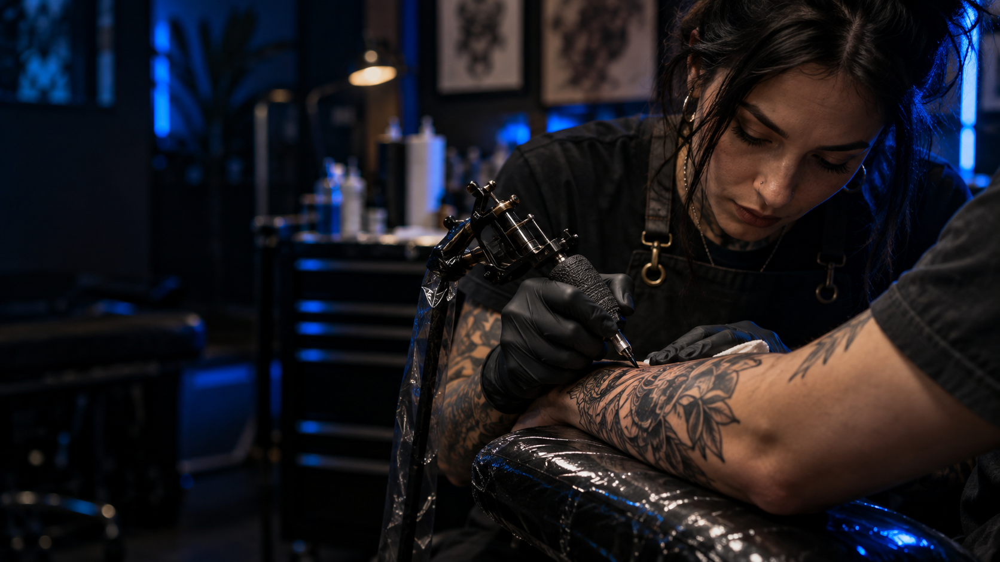
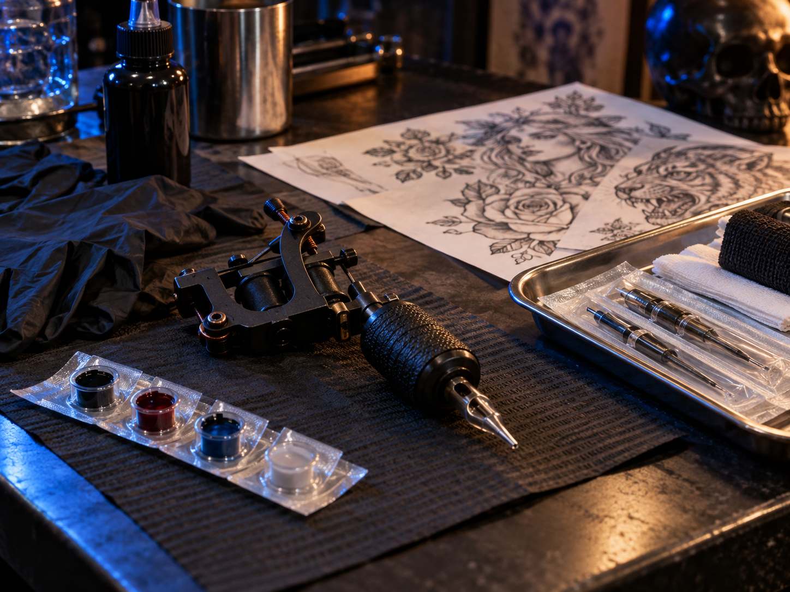
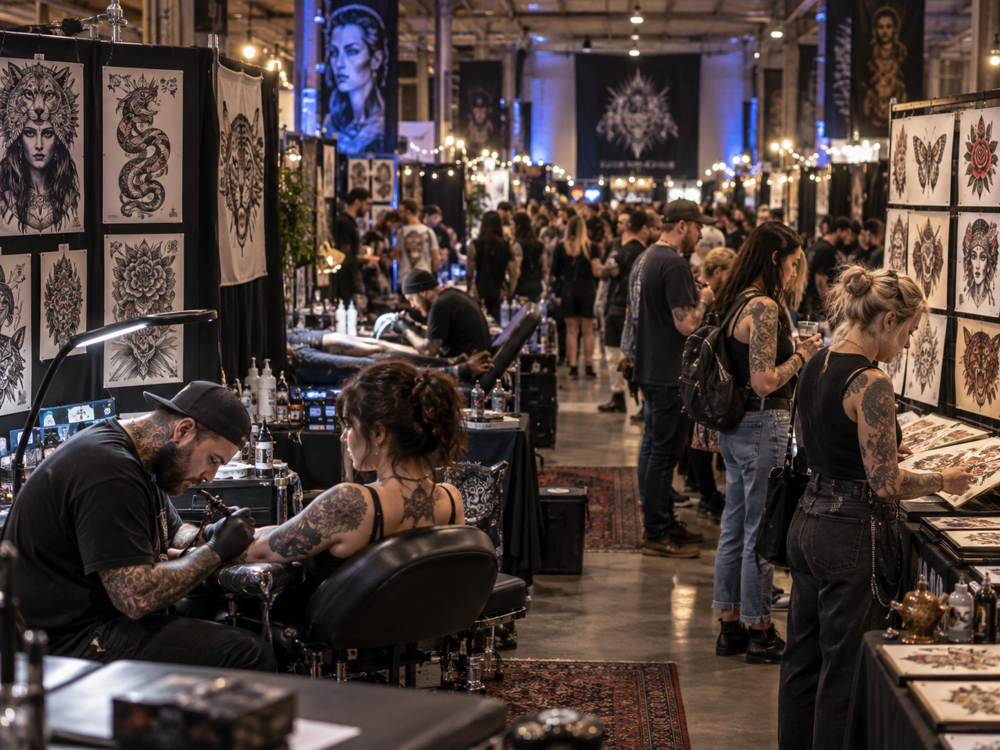
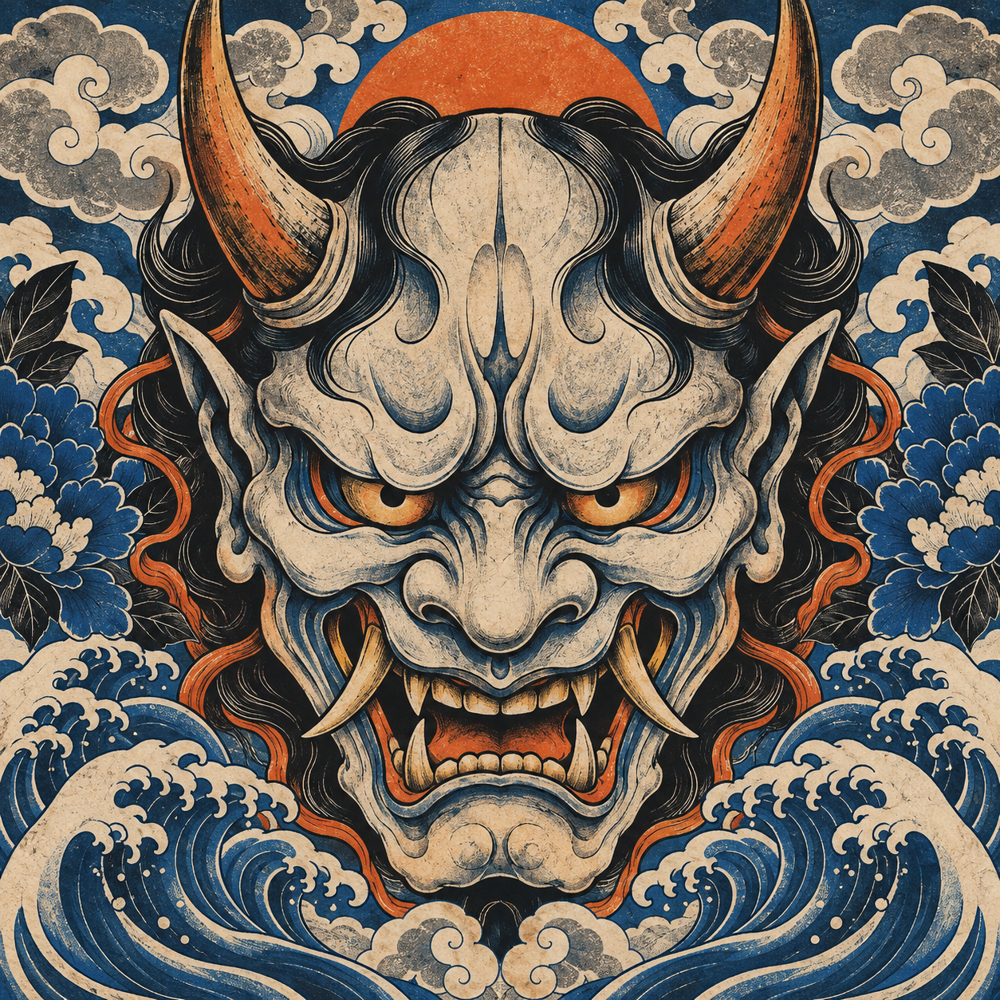

EN VIVO
Tattoo Competition
Artistas trabajando en vivo y una competencia que celebra la técnica, la composición y la creatividad.
tattoo art culture
Una jornada para quienes viven el tatuaje como expresión, oficio y comunidad.
Conocer el próximo eventoEL PROYECTO
Organizado por Blu House, BLU INK FEST reúne a tatuadores, artistas, marcas, proveedores y amantes de la cultura del tattoo en un mismo espacio.

EN VIVO
Artistas trabajando en vivo y una competencia que celebra la técnica, la composición y la creatividad.

EXPERIENCIAS
Durante la jornada habrá sorteos, demostraciones y actividades para el público.

COMUNIDAD
Marcas, distribuidores y emprendimientos del universo tattoo, arte y diseño en un mismo recorrido.
PRÓXIMA EDICIÓN · DATOS TENTATIVOS
Tatuajes en vivo, competencia, feria de marcas, arte y experiencias para toda la comunidad.
17 ABR 2027 · 12:00 A 22:00 H
CENTRO DE CONVENCIONES SALTA

La fecha y la sede son una propuesta y están sujetas a confirmación.
Todo lo esencial para empezar a planear tu visita.
Es un encuentro de tatuaje, arte y cultura creado por Blu House.
La propuesta actual es el 17 de abril de 2027 en el Centro de Convenciones Salta. Ambos datos están sujetos a confirmación.
En la página del evento vas a encontrar los enlaces de WhatsApp para tatuadores y marcas.
Todavía no. Precios, cupos y modalidad de ingreso se anunciarán cuando el evento esté confirmado.